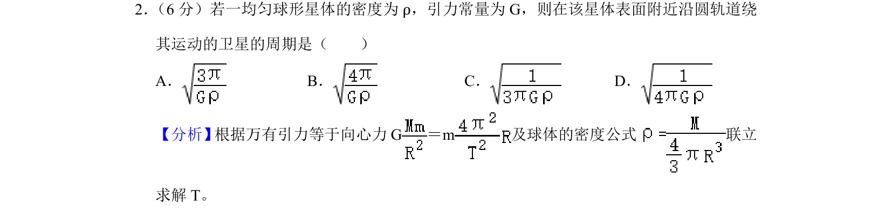
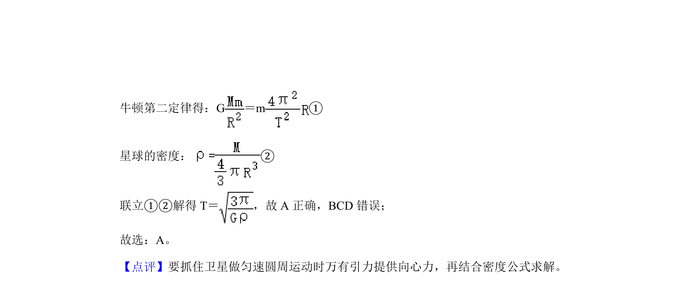

考点：万有引力定律 向心力 密度公式 周期

该题通过万有引力提供向心力并结合密度公式，求解均匀球体表面附近卫星的环绕周期。

📄 原 PDF 第 1 页：
素材/真题/吉林/2008-2024·（吉林）物理高考真题/2020年高考物理试卷（新课标Ⅱ）（解析卷）.pdf
2． （6分）若一均匀球形星体的密度为ρ，引力常量为G，则在该星体表面附近沿圆轨道绕 其运动的卫星的周期是（ ） A．B．C．D．
【分析】 根据万有引力等于向心力G＝m及球体的密度公式 联立 求解T。 【解答】解：设星球的质量为M，半径为R，卫星的质量为m，运行周期为T，在该星 体表面附近沿圆轨道绕其运动的卫星所需的向心力由星球对其的万有引力提供，则根据